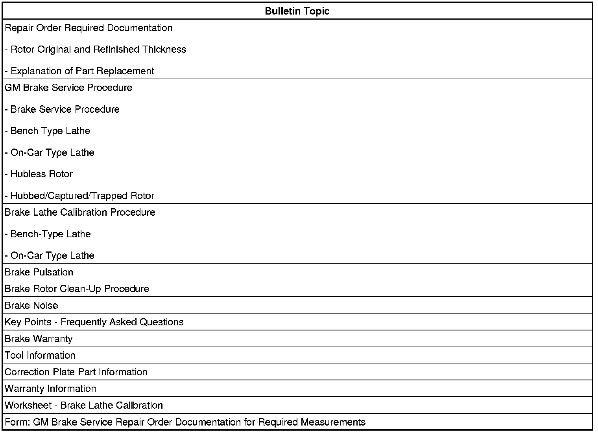
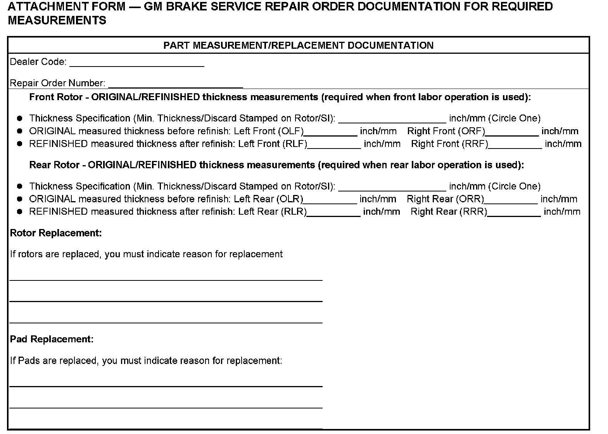
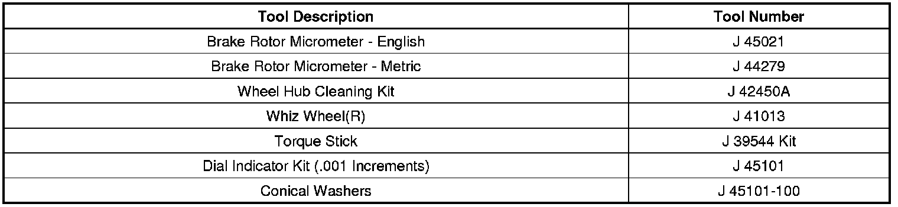
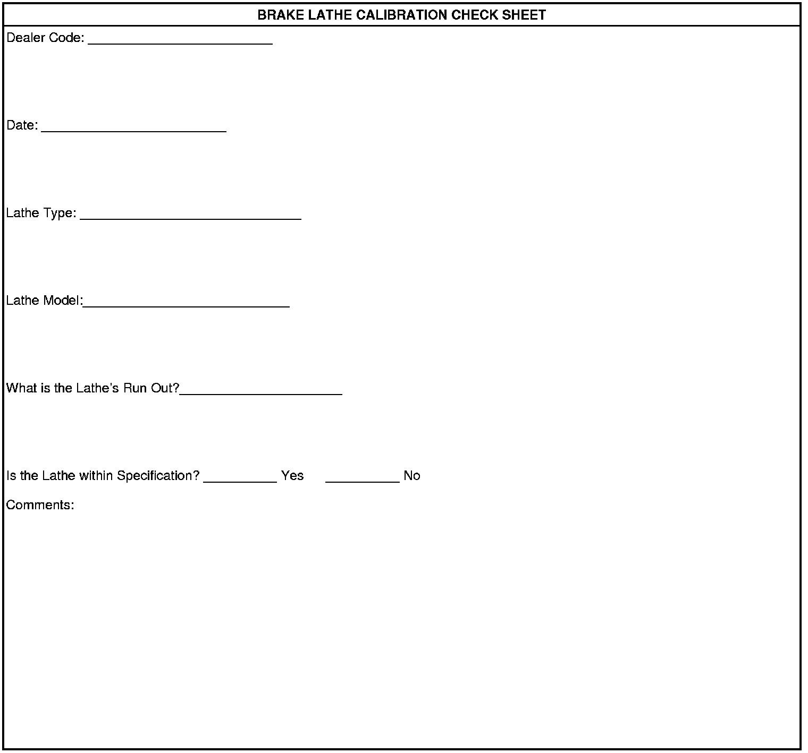

Brakes- Disc Brake Warranty Service And Procedures: Overview
INFORMATIONBulletin No.: 00-05-22-002L
Date: March 26, 2009
Subject:
Disc Brake Warranty Service and Procedures
Models:
1999-2010 GM Passenger Cars and Light Duty Trucks
2003-2010 HUMMER H2
2006-2010 HUMMER H3
1999-2004 Isuzu Light Duty Trucks (Canada Only)
2005-2009 Saab 9-7X (Canada Only)
1999-2010 Saturn Vehicles (Canada Only)
EXCLUDING 2009-2010 Chevrolet Corvette ZR1
Supercede:
This bulletin is being revised to inform you that due to improvements in vehicle brake corner and wheel design, assembly plant build processes and dealership required tools like the On-Car Lathe, measuring for Lateral Run Out (LRO) is no longer a required step when performing base brake service. Due to this change, you are no longer required to enter the LRO measurement on the repair order or in the warranty system failure code section. The bulletin information below and the base brake labor operations have been updated accordingly. Due to this change it is more important than ever to properly maintain your brake lathe (per the Brake Lathe Calibration Procedure in this bulletin). Please discard Corporate Bulletin Number 00-05-22-002K (Section 05 - Brakes).
For your convenience, this bulletin updates and centralizes all GM's Standard Brake Service Procedures and Policy Guidelines for brake rotor and brake pad service and wear. For additional information, the Service Technical College lists a complete index of available Brake courses. This information can be accessed at www.gmtraining.com > resources > training materials > brakes courseware index. In Canada, refer to Service Know How course 55040.00V and Hydraulic Brake Certification program 15003.16H.
Important
PLEASE FAMILIARIZE YOURSELF WITH THESE UPDATES BEFORE PERFORMING YOUR NEXT GM BRAKE SERVICE.
The following four (4) key steps are a summary of this bulletin and are REQUIRED in completing a successful brake service.
1. Measure and Document Pre-Service Rotor Thickness* (REQUIRED on Repair Order) - determine rotor clean-up/refinish/replace
2. Properly clean ALL brake corner mating surfaces - hub, rotor and wheel
3. Properly clean-up/refinish rotor, measure and document post-service rotor thickness (REQUIRED on Repair Order)
Important
If it is determined the rotor needs to be refinished, verify lathe equipment is properly calibrated.
4. Properly reassemble the brake corner using proper torque tools, torque specification and torque sequence - wheel lug nuts.
* The bulletin refers to Minimum Thickness specification as the minimum allowable thickness after refinish. Always refer to SI to verify the spec stamped on the rotor is the minimum thickness spec after refinish and not the discard spec.

Bulletin Format
***REPAIR ORDER REQUIRED DOCUMENTATION

Important
When using any one of the brake labor operations listed in this bulletin (except for H9709 - Brake Burnish), the following two rotor measurements (1. Original Rotor Thickness, 2. Refinished Rotor Thickness are required and MUST be written/documented on the repair order, or for your convenience, complete the form (GM Brake Service Repair Order Documentation for Required Measurements) shown above and attach it to the repair order. If the Warranty Parts Center generates a request, this Documentation/Form must be attached to the repair order that is sent back.
Important
Documentation of brake lathe maintenance and calibration as recommended by the lathe manufacturer must be available for review upon request.
Repair Order Documentation - Rotor Original And Refinished Thickness - REQUIRED
When resurfacing a brake rotor or drum, the ORIGINAL thickness (measured thickness before refinish) and REFINISHED thickness (measured thickness after refinish) MUST be written/documented on the repair order hard copy for each rotor serviced. If a rotor replacement is necessary, only the original thickness measurement needs to be recorded.
Repair Order Documentation - Explanation of Part Replacement - REQUIRED
If replacement of a brake component is necessary, proper documentation on the repair order is required. See the following examples:
^ Brake rotor replacement - Customer comment was brake pulsation. Rotor was refinished on a prior brake service. After rotor measurement, it was determined that refinishing the rotor again would take it under the Minimum Thickness specification.
^ Brake pad replacement - Customer comment was brake squeak noise. On inspection, found pads contaminated by fluid leak at caliper.

TOOL INFORMATION
CORRECTION PLATE PART INFORMATION
Refer to TSB 01-05-23-001 for the Brake Align(R) application chart.
For vehicles repaired under warranty, Brake Align(R) Run-Out Correction Plates should be submitted in the Net Amount at cost plus 40%. Brake Align(R) Run-Out Correction Plates are available through the following suppliers:
- Dealer Equipment and Services
- Brake Align(R) LLC (U.S. Dealers Only)
* We believe this source and their products to be reliable. There may be additional manufacturers of such products. General Motors does not endorse, indicate any preference for or assume any responsibility for the products from this firm or for any such items, which may be available from other sources.

WARRANTY INFORMATION

WORKSHEET - BRAKE LATHE CALIBRATION
Important
Brake lathe calibration should be performed and recorded monthly or if you are consistently measuring high LRO after rotor refinishing.

Disclaimer